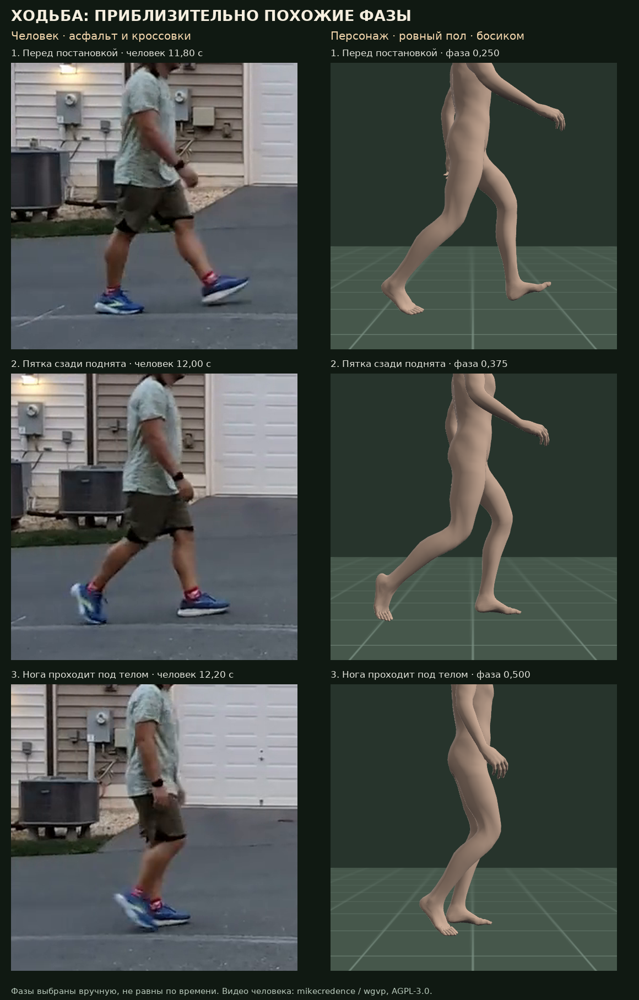
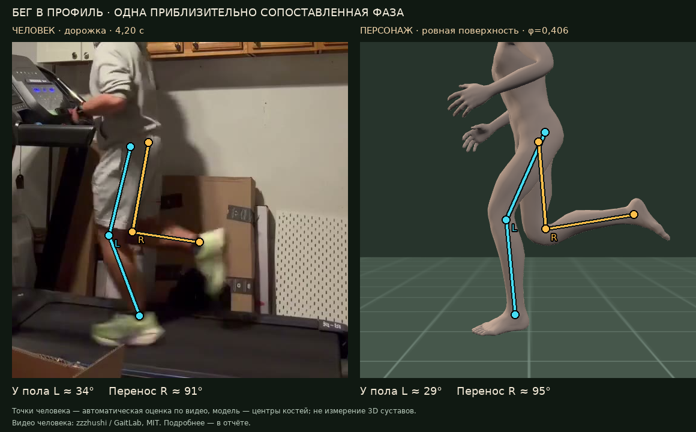
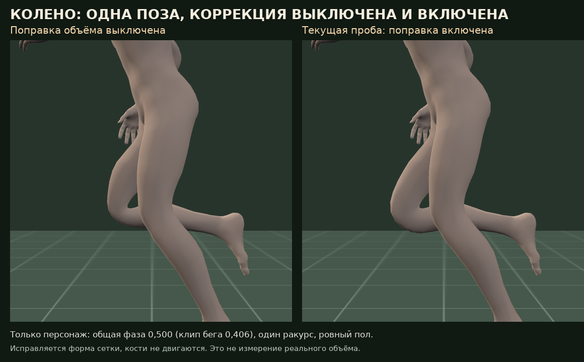

01 / ХОДЬБА
Движение узнаётся, поза отличается
Ноги чередуются, задняя пятка поднимается. В выбранном похожем кадре переднее колено персонажа выглядит более согнутым, а задняя пятка — выше, чем у человека.
Сравнение ходьбы и бега в профиль: как сгибается колено, переносится нога и меняется её форма. Это наблюдение за конкретными записями, а не медицинский анализ.
Текущая проба · ровная поверхность 0°В каждом разделе сначала показана половинная скорость, затем тот же отрывок в обычном темпе. Фазы приблизительно совмещены только в начале, после чего записи идут каждая в своём темпе.
Ноги чередуются, задняя пятка поднимается. В выбранном похожем кадре переднее колено персонажа выглядит более согнутым, а задняя пятка — выше, чем у человека.
На выбранной 2D-проекции у ноги в переносе получилось примерно 91° у человека и 95° у модели. Это оценка одного кадра, не доказательство совпадения всего цикла.
При включённой коррекции колено выглядит полнее, чем без неё. Меняется поверхность сетки, но кости остаются на месте; реалистичность мягких тканей этим не доказана.
Контроллер не фиксирует стопу по горизонтали. Движение точек возле пола обнаружено, но по одной близости к поверхности нельзя доказать ни контакт, ни скольжение.
Нажмите на изображение, чтобы открыть его целиком.



Люди на записях в кроссовках; бег снят на дорожке с неизвестными скоростью и уклоном. Референса человека на уклоне 15–20° здесь нет. Съёмка 30 кадров/с не позволяет надёжно сравнить очень быстрые подёргивания.
На склоне резкое движение колена в модели ранее подтверждено отдельной технической проверкой. Экспериментальное смягчение осталось исследовательским — исходная проба не заменена.
Полный отчёт: метод, числа и ссылки на исходники · Предыдущее исследование рывков